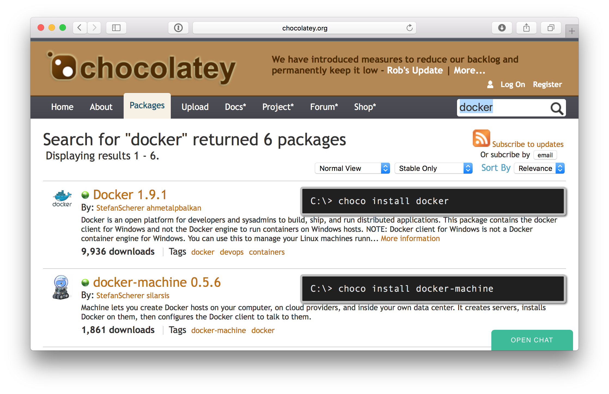

Get started with Docker on Windows using Chocolatey
The Docker tools are useful on a Windows machine to build and run applications in Linux containers locally in a VM or in the cloud. With the Chocolatey package manager you can install all the Docker tools you need to get started.
If you don't know what a shell window is then you should have a look at the Docker Toolbox from Docker. But if you know and use a PowerShell or CMD shell window from time to time I'll guide you through the simple steps.
Let's get Chocolatey
Chocolatey is an open source project to provide a package manager for Windows as you might know it from Linux distro. You can install many of your software on your Windows machine with it.
Just open chocolatey.org and search for eg. Chrome, Adobe Reader, or other tools you have installed manually in the past. You will find out fast that nearly everything could be installed with just the command
choco install anything
That makes Chocolatey really cool. It's like apt-get, but for Windows. And the software is downloaded from the original places, the choco packages only contains the instructions where to download it and how to install it silent.
If you haven't installed Chocolatey already just open the homepage https://chocolatey.org and copy the simple command to your shell.
Docker Chocolatey packages
To see which Docker tools are available through Chocolatey packages, just open the Chocolatey homepage and search for docker.

The Chocolatey packages for the Docker tools are maintained by the community. But they are kept up-to-date, so you can update each tool soon after the official release.
At the moment you can install
- Docker Client
- Docker Machine
- Docker Compose
as well as a Docker Machine driver plugin for VMware Workstation.
Docker Client
To begin with Docker you need the Docker Client. Install it in a PowerShell or CMD shell window with
choco install -y docker
The option -y just auto-answers the question to run the install script.
Now we have the docker command installed. Try it out with docker --version for the installed version or docker --help to see the usage. This client will be used to build and run Docker Containers.
Docker Machine
The next step is to create a VM to run the Linux containers in it. Docker Machine is the right tool for that task. So we first install it with
choco install -y docker-machine
Local Hypervisor
Windows users can select between these three local hypervisors to run a Linux Docker Engine in it.
- Hyper-V
- VirtualBox
- VMware Workstation
All three hypervisors can be controlled by Docker Machine.
For Hyper-V follow the official guide how to install it on your machine.
VirtualBox can also be installed with Chocolatey, guess how
choco install virtualbox
For VMware Workstation you also need the driver plugin and VMware Workstation if not already installed:
choco install docker-machine-vmwareworkstation
choco install vmwareworkstation
For VMware Workstation you enter your license before using it.
Cloud
You also can create a VM in the cloud, Docker Machine has a lot of cloud drivers built in.
- Windows Azure
- Digital Ocean
- Google GCE
- OpenStack
- Rackspace
- ...
See the official guide Using Docker Machine with a cloud provider for more details.
Create a Docker Machine
After you have set up your local hypervisor or chosen the cloud provider you want to use, create a Docker Machine VM with the name dev with one of these commands:
docker-machine create -d hyperv dev
docker-machine create -d virtualbox dev
docker-machine create -d vmwareworkstation dev
docker-machine create -d azure ... dev
docker-machine create -d digitalocean ... dev
There are driver specific options to tweak the VM settings or the token to connect to your account in the cloud.
After a while you will have your local or remote Docker Machine up and running.
You can check the status of the machine(s) with
docker-machine ls
Connect to your Docker Machine
For the Docker Client you need some environment variables so that the Docker Client knows how to connect to your local or remote Docker Engine.
In PowerShell it is really easy to set these environments.
docker-machine env --shell powershell dev | iex
In the near future can skip the --shell parameter as well to simplify this step.
After that you can control the Docker engine and start your first container, eg. this interactive shell
docker run --rm -it ubuntu bash
Type exit to terminate the container.
Congratulations! You have started your first container.
Docker Compose
If you want to start more than one container that should work together you can use Docker Compose. It simplifies this task to setup a multi container application.
choco install -y docker-compose
Please refer to the official Overview of Docker Compose guide to find out more.
Now you are ready to work from your Windows machine and control the world of Linux containers. In the near future you also can do this with Windows containers as well.
TL/DR
With just a few commands you get all the Docker tools installed on your Windows machine. And it fits into a single tweet:
Get the latest @Docker tools for #Windows:
choco install docker
choco install docker-machine
choco install docker-compose
Done!
— Stefan Scherer (@stefscherer) 6. November 2015If you like this blog post please share it with a friend or leave a comment to give feedback or ask questions.